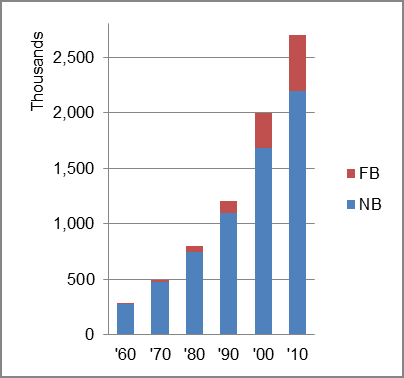

The foreign-born (FB) population decreased from 13,133 in 1960 to 508,458 in 2010. That was an increase of 3771.6 percent. The foreign-born share changed from 4.6 percent to 18.8 percent.
The share of the overall population that was native-born (NB) increased by 705.5 percent.
Nevada: Population 1960-2010 
The first chart below shows the three population change factors for three periods adjusted for annual average amounts. Domestic migration (NDM) was the primary factor in population increase until the most recent period when B-D was largest.
The second chart shows the same data but with an adjustment to reflect births to immigrants shifted to NIM. In it, NIM replaced B-D as the primary factor in adding population in the most recent period.
Nevada: Sources of Population Change 1990-2013 Nevada: Sources of Population Change (Adjusted) 1990-2013
B-D NDM NIM B-D NDM NIM 90-'99 19.3% 71.5% 9.2% 90-'99 12.4% 71.5% 16.1% 00-'09 25.7% 57.3% 16.9% 00-'09 12.3% 57.3% 30.4% 10-'13 54.6% 19.1% 26.3% 10-'13 18.3% 19.1% 62.6%